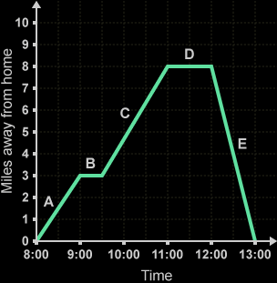
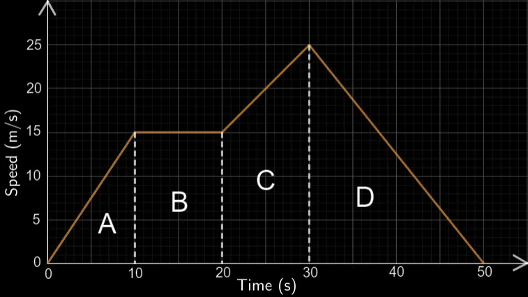
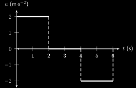

Motion graphs help us understand how an object moves over time. The three main types of motion graphs are:
- Displacement-Time Graphs
- Velocity-Time Graphs
- Acceleration-Time Graphs
1. Displacement-Time Graphs
These graphs show how the position of an object changes over time.
- A straight, sloped line indicates constant velocity.
- A horizontal line means the object is at rest.
- A curved line means the object is accelerating or decelerating.

2. Velocity-Time Graphs
These graphs show how the velocity of an object changes over time.
- A straight, horizontal line means constant velocity.
- A sloped line means the object is accelerating or decelerating (positive or negative gradient).
- The area under the curve gives the displacement.

3. Acceleration-Time Graphs
These graphs represent how the acceleration of an object varies with time.
- A horizontal line above the time-axis indicates constant positive acceleration.
- A horizontal line below the time-axis indicates constant negative acceleration (deceleration).
- The area under the curve gives the change in velocity.

Understanding motion graphs helps in interpreting and predicting the behavior of moving objects in physics problems.
Written by Thenura Dilruk